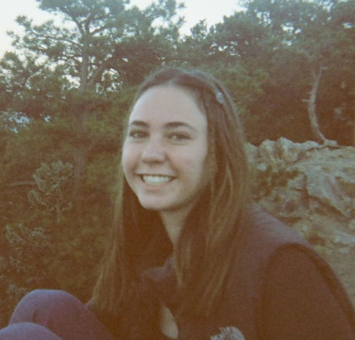
My name is Grace Halbleib, the President of TBP for 2024-2025, returning after being the recording secretary for last year. I am a senior in Aerospace Engineering, with a minor in Computer Science. I am a TF for ASEN 2702: Intro to Thermodynamics and Aerodynamics, and I spent last summer doing aerodynamics research using CFD workflows. I am also the president of SGT, the Aerospace Engineering Honors Society.
Other than academics, I have my private pilot’s license and I am currently working on my instrument rating. Most of my time is in the Cessna 150, Cessna 172, and DA-20, however I have also flown a Piper Cherokee and a Bonanza A-36TC, which has been my favorite.
Finally, I spend my free time skiing, hiking, or enjoying time outside. I am also passionate about art, including woodworking, origami, 3D art, writing, film photography, and more.
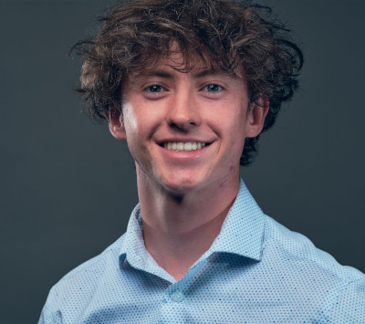
I’m CJ O’Neill, the Vice President of TBP for 2024-2025. Currently, I’m a junior at the College of Engineering, majoring in Aerospace. Alongside my studies, I work as a Spacecraft Systems Engineer at the Laboratory for Atmospheric and Space Physics, contributing to the Emirate Mission to the Asteroid Belt. Additionally, I serve as a Teacher Faculty (TF) for Intro to Thermodynamics and Aerodynamics.
When I’m not immersed in academics or work, you’ll likely find me in the mountains, either climbing or snowboarding, depending on the season. At home, I enjoy playing guitar, with some of my favorite artists being Jack Johnson, Bob Dylan, Pearl Jam, and Smashing Pumpkins.
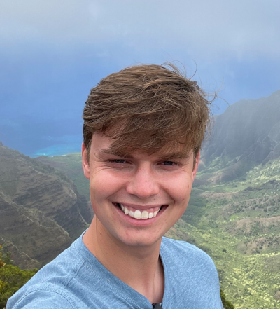
Hi my name is David Katilius and this year I am the Treasurer of Tau Beta Pi, returning after being the logistics coordinator my previous year. I am a senior this year in the Biomedical Engineering program, looking to minor in Electrical Engineering. This past summer I was fortunate enough to work in a fluid dynamics lab where I built a wind tunnel which helps researchers understand more about bees.
Outside of school I enjoy a wide variety of activities including sports (basketball, tennis, pickleball, volleyball, snowboarding), video games (Counter-Strike, Elden Ring, Catan), reading and traveling.
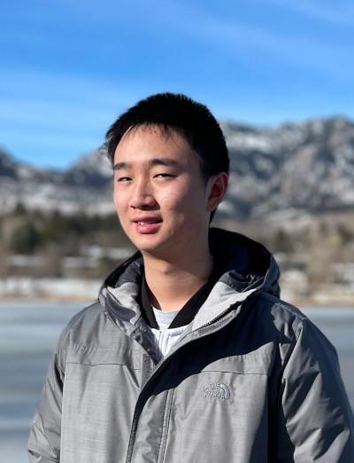
My name is Miles Zheng and this year I am the Recording Secretary of Tau Beta Pi. I am a sophomore double majoring in Computer Science and Mathematics. I have an interest in machine learning as well as theoretical computer science. I have also worked at NIST over the summer in the Quantum Nanophotonics group.
Outside of school, I enjoy reading novels and taking walks. I also know Mandarin. This is my second year in Tau Beta Pi, and I’m excited for this semester.
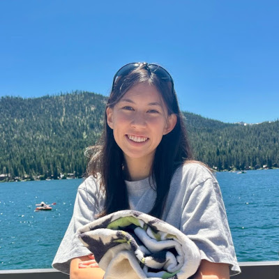
My name is Nora Su and this year I am the corresponding secretary of Tau Beta Pi. I’m from Mountain View in the California Bay Area. I am currently a sophomore studying computer science, with a particular interest in HCI. I’m an LA for the CSCI 1300 class for the first time this year and am also getting into AI and robotics-related research in the CAIRO Lab here at CU.
Outside of academics, I love distance running, hiking, ice skating, and traveling. I also enjoy making home movies and fun videos with my friends. This is my first year in Tau Beta Pi, and I’m super excited to be part of this chapter!
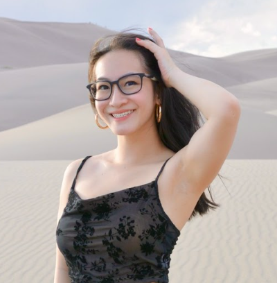
Hi! I’m Melissa Wong, the Educational Outreach Director for Tau Beta Pi this year. As a freshman with a dual major in Pre-Med Biomedical Engineering and Computational Linguistics, I’m interested in building bridges between traditionally separate disciplines. I seek to be an advocate for medical equity, mobilizing a better healthcare system through multidisciplinary research and people-driven solutions. My educational background ranges from teaching music to underprivileged children through Youth in Tune to accompanying adaptive snowsports lessons at Ignite Adaptive Sports.
Having lived in Shanghai, California, and Colorado, I am continually appreciative of cross-cultural connections and novel experiences. True to my Colorado roots though, I’m an adrenaline-junkie, skier, climber, and pickleball enthusiast. On the other half, I’m a concert-goer, fashion buff, and a lover of all things life!
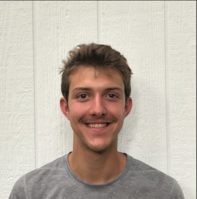
My name is Logan Marshall and I am the Membership Director for this year. I’m from Boulder, Colorado. I’m a junior at the college College of Engineering, majoring in Mechanical Engineering with a minor in computer science. In addition to school, I work as a Junior Design Engineer utilizing CAD software and rapid prototyping at CodeCom, a fiber optics company. I have an interest in exploring robotics and aerospace engineering in the future.
Outside of academics, I love travelling, health and fitness as well as the outdoors. I also enjoy expressing my creative side through sewing and doodling. I look forward to getting more involved in Tau Beta Pi this year!
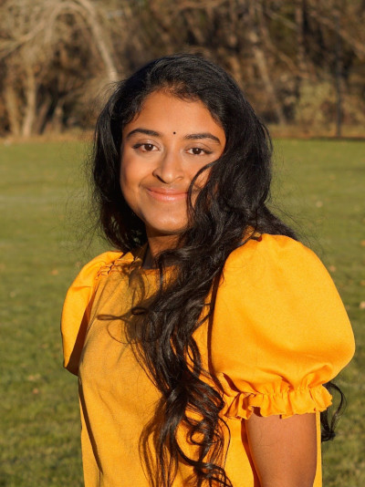
Hello, my name is Hyma Jujjuru. I was initiated into Tau Beta Pi in November 2024, so this is my first year at TBP. This year, I will be serving as the CS Director of Professional Relations. I am a sophomore majoring in Computer Science and minoring in Business and Math. I am currently an Undergraduate Student Research Assistant at the HIRO Lab at CU Boulder, researching multi-embodiment assistants interactions with humans. Last summer, I was provided the opportunity to work under a professor from the CU Boulder Electrical Engineering Department as an Undergraduate Student Research Assistant.
Outside of academics, I really value the time I spend with family and friends. I love travelling, reading, music, and spending time in nature. I also enjoy car drives, especially around Boulder. I really look forward to my experience at Tau Beta Pi.
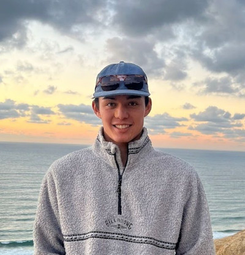
Hi! I’m Jonathan, the Professional Relations Director for Tau Beta Pi. This year, I’m thrilled to foster meaningful connections between students and industry professionals, helping bridge the gap between academia and the professional world. I’m currently a Junior majoring in Mechanical Engineering and I also have the honor of serving as President of our chapter of the American Society of Mechanical Engineers (ASME).
Beyond academics, I’m passionate about advancing innovation in the medical device industry. My hands-on experiences at companies like Abbott Laboratories, where I led performance testing on coronary stents, have solidified my dedication to engineering solutions that save lives and transform healthcare.
When I’m not tackling engineering challenges, you’ll likely find me chasing waves along the coast or hunting down fresh powder in the mountains, depending on the season.
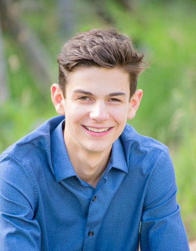
Hello, my name is Carson Mead and this year I am serving as the Volunteering Director for Tau Beta Pi. I am a sophomore majoring in Aerospace Engineering and hope to minor in Computer Science. Over the summer, I had the privilege to intern at a local aerospace company where I performed testing to measure parasitic torque on satellite solar arrays.
Outside of my academics, I love to travel, mountain bike, ski, hike, and SCUBA dive. At home, I have a huge passion for woodworking where I have constructed all sorts of projects ranging from cutting boards, to coffee tables, to credenzas through my own small business. This is my first year being a part of Tau Beta Pi and I am so excited to get involved in our community!
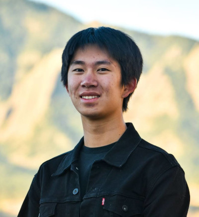
Hi! I’m Ryan Chen and I’m serving as the Social Events Director. I am a sophomore Aerospace Engineering student with a minor in Computer Science at CU Boulder. As a team lead in the “CU in Space” Rocketry Club, I’m working on the development of hybrid rocket motors. I also do bioastronautics research, where I complete subject testing, data cleaning, and analysis in order to model trust within human-autonomy teams.
For fun, I love climbing, playing racket sports, and snowboarding! I’ve also marched two seasons of Drum Corps International–pro marching band–where I played the euphonium for the Battalion and the Blue Knights.
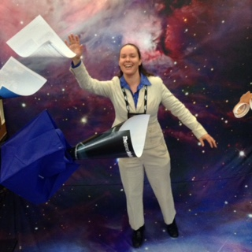
I am an aerospace engineer who has done design, analysis, and operations of civil & commercial, manned & unmanned spacecraft for various companies before starting my own independent subcontracting business. My experience includes space situational awareness, orbital mechanics, systems engineering, electrical power systems, and environmental control & life support systems. Currently, I am a Senior Spacecraft Engineer at Atomos Space in Denver, designing space tugboats.
As an undergraduate, I served first as corresponding secretary, then as president of the Colorado Beta chapter. Upon graduation with my BS/MS in aerospace engineering in May 2001, I was elected to the advisory board, and became chief advisor in 2003. Since then, I have helped Colorado Beta host Tau Beta Pi National Conventions in 2006 and 2018. In 2016, I received the national Outstanding Advisor Award from Tau Beta Pi. I am also a director of the Front Range Alumni Chapter, acting as liaison between the alumni and student chapters.
In my spare time, I enjoy reading and watching programs about science, science-fiction, and fantasy. I can often be found riding my bike around Boulder or hiking along the trails. Other hobbies include knitting, sewing, and personal finance. Feel free to contact me with questions about Tau Beta Pi, anything space-related, life after college, etc.
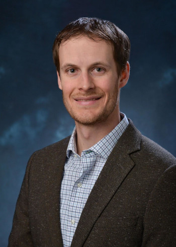
My name is Torin Clark and I am the faculty advisor for Tau Beta Pi. I am an Associate Professor in the Smead Aerospace Engineering Sciences Department and faculty member in the Biomedical Engineering Program. I am a member of the Bioastronautics Laboratory, where we research the challenges that humans face during space exploration missions. Specifically I focus on astronaut biomedical issues, space human factors, human sensorimotor/vestibular function and adaptation, interaction of human-autonomous and human-robotic systems, mathematical models of spatial orientation perception, and human-in-the-loop experiments.
Outside of TBP, I like to listen to ski, hike mountains, camp, play soccer, and do those things with our two little kids.
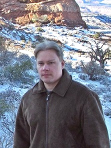
I've worked at CU's Laboratory for Atmospheric and Space Physics (LASP) for nearly a decade as an Embedded Systems Engineer, which means I gets to combine three of my favorite hobbies: software, electronics, and space. My MS is in Electrical Engineering from CU Boulder.
I've acted as an advisor to the CU Boulder chapter since 2007 and before that served as the chapter President. I was appointed a TBP District Director in 2011, a post intended to facilitate communication between collegiate chapters and TBP HQ. My favorite parts of being involved with TBP are the frequent chapter visits, establishing relationships with chapter officers, and seeing officers grow into strong leaders.
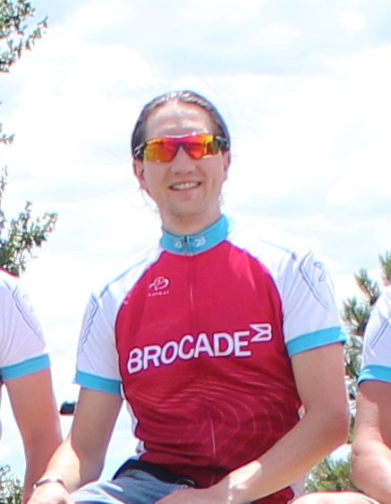
I am an alumni of the Computer Science department of CU Boulder. I graduated from the BS/MS program at the end of 2009. Since graduating, I've has been working for Broadcom Limited (used to be Brocade Communications System) in Broomfield, Colorado. For Broadcom, I am a embedded software and linux kernel module developer working on the firmware running the network switches and routers.
Outside of a work, I dedicate a lot of time to my athletic pursuits as a endurance cyclist participating in many rides in the front range and Colorado mountains. In addition to cycling, I am starting to participate in triathlon racing. In the time remaining, I like reading, learning to play the piano, and getting together with friends.
I been an advisor for the Colorado Beta chapter since 2010. I am a past president of the CO-B chapter and currently is a member of the Front Range TBP Alumni chapter. I greatly enjoyed working with the students to support them for leading the chapter's membership. I enjoy watching the students grow and learn new skills and grow in their experiences.